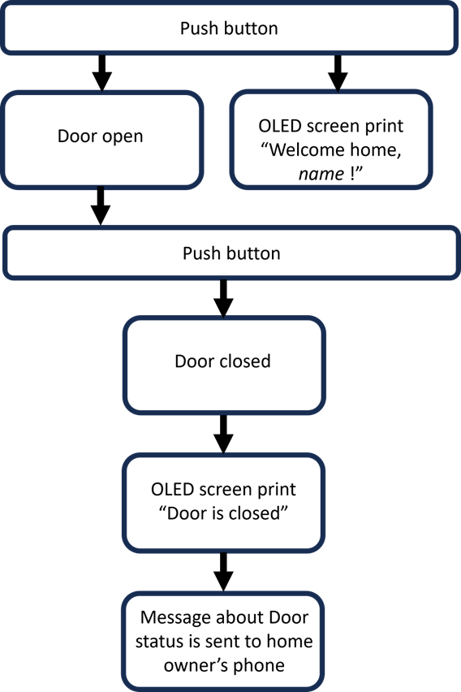

Automatic Garage Door Opener
EEC172 SQ24
Description
The Automatic Garage Door Opener is a sophisticated project utilizing the TI Launchpad CC3200 for Wi-Fi connectivity and processes signals from the IR receiver, and the Arduino Uno R3 to control the stepper motor for precise door movement. Operated via a AT&T IR remote control and an IR receiver circuit, the system features an OLED display for welcome messages and door status updates. Integrated with AWS, it sends real-time notifications to the homeowner's phone, ensuring convenience and security.Our source code can be found here in a separate github repository
Video Demo
Our project video demo showcases the seamless functionality of our garage door automation system. Upon pressing a button, the garage door smoothly pulls down, signaling its closure, while simultaneously displaying a message on the OLED screen to indicate that the door is closed. Another button press initiates the door's upward movement, effortlessly opening it. Furthermore, our system sends a signal to AWS upon completion of each action, ensuring real-time updates. Subsequently, users receive notifications on their phones, providing them with the current state of the door for enhanced convenience and peace of mind.
Video Demonstration
Market Survey
The smart home technology market is witnessing robust growth, with garage door automation emerging as a key area of interest for homeowners seeking enhanced convenience and security. However, many existing solutions on the market are complex, feature-laden, and often come with high price tags. These systems integrate advanced functionalities such as remote control, voice command integration, and real-time alerts, which may be more than what an average user needs or wants to pay for.
Our project focuses on providing a straightforward, affordable solution for garage door automation. Our system simplifies the user experience by enabling basic functionalities: opening and closing the garage door, displaying status messages on an OLED screen, and sending these status updates to an AWS server. By focusing on essential features, our system remains cost-effective and easy to install, making it an attractive option for homeowners who desire reliable and simple garage door automation without the complexity and expense of more advanced systems. This targeted approach ensures that our product meets the basic needs of the market while remaining accessible to a broader audience.
Design
Functional Specification
System Architecture
When the user push the button on the IR remote to open the door, the remote sends a signal to the IR receiver circuit connected to the TI Launchpad CC3200. This controller simultaneously triggers the OLED to display a welcome message and sends a signal to the Arduino board to activate the stepper motor, opening the door. When you push the button again after the door is fully opened, the CC3200 sends a signal to the Arduino to operate the motor in the opposite direction, closing the door. Once the door is completely closed, the Arduino sends a signal to the CC3200, which then updates the door status on the OLED and sends a notification to the homeowner.
Implementation
Software Implementation
IR Remote Control and Signal Processing
In this section, we utilized our findings from Lab 3, where we analyzed IR transmission using a Saleae USB Logic Analyzer, decoded the data, and integrated it into our project. Although the system originally required only one button for door operation, we expanded functionality by incorporating multiple buttons for different users. This enhancement enables the system to identify users based on their input data, comparing it with each user's unique data.
The SysTick timer, operating at a clock frequency of 80 MHz, is essential for measuring pulse lengths received from the IR receiver. It employs various functions such as HWREG, MAP_SysTickPeriodSet, MAP_SysTickIntRegister, MAP_SysTickIntEnable, MAP_SysTickDisable with interrupts triggered when the countdown reaches zero.
Pin 8 serves as the designated GPIO pin for receiving input from the IR receiver. Interrupts are activated specifically on the falling signal edge using functions such as MAP_GPIOIntRegister, MAP_GPIOIntTypeSet, MAP_GPIOIntStatus, and MAP_GPIOIntClear. When triggered, the receiver GPIO ISR disables the SysTick timer and sets a flag indicating interrupt occurrence. The main function measures the disabled SysTick duration by recording tick counts and compares them against predefined thresholds. The "Decode" function interprets signals based on a delta buffer, initializing a variable "sum" to store the decoded value. If a value in the buffer exceeds 2000 microseconds, the least significant bit of "sum" is set to 1 using a bitwise OR operation, returning the decoded signal.
Upon capturing and storing 16 bits, the program verifies the sequence's validity by comparing it with predefined integer values representing unique 16-bit patterns for each remote control key, including 0-9, MUTE, and LAST. These sequences consist of 8 address bits and 8 data bits. If a match is found, the application transmits the data to the UART0 terminal; otherwise, the key is deemed invalid, and no output is generated.
OLED Display
Incorporating OLED Display functionality from Lab 2, we integrated files provided in the Canvas lab sections into our project. To emulate the Arduino example found in the test.ino file, we introduced the WriteData() and WriteCommand() functions. These additions enable us to utilize higher-level OLED library functions present in the Adafruit_OLED.c and test.c files.
Stepper Motor
The stepper motor, connected to an Arduino Uno R3, is programmed to perform specific actions. It's set to undergo 2048 steps per revolution and operates at a speed level of 3. Additionally, it's configured to execute 2 full revolutions. The motor's direction is determined by a variable reflecting the door's state.
When the door is in the "closed" state and receives a trigger signal, the motor turns counterclockwise, effectively pulling the door up to open it. Conversely, when the door is in the "opened" state and receives a trigger signal, the motor rotates clockwise to close the door.
AWS and RESTful API
The AWS deployment is established to receive data from our system and dispatch messages to user/ homeowner’s phones. We initiated this process by setting up a device thing/shadow named "jade_cc3200_board" in AWS IoT, configuring it as a classic shadow, and acquiring the Restful API endpoint address. Subsequently, necessary certificates and keys were generated, and an access policy was created for our shadow, associating it with our thing and attaching this policy to the certificate. Converting certificate and private key files from .pem to .der format using OpenSSL followed suit. Additionally, a new standard topic was initiated in Simple Notification Service (SNS), with subscription via email confirmed and functionality tested by message publishing. Finally, a rule in AWS IoT was established to monitor specific topic updates, report on desired state attributes, and forward messages to the SNS topic, with the rule enabled post-configuration. To facilitate communication with AWS IoT from the board, we utilized provided example code from canvas and tailored the given example (lab4-blank.zip) to post state to AWS and obtain status information on our AWS thing. Modifications included adjusting Common.h for easy debugging and stable connection, replacing the internet connection reference with our phone’s hotspot details, and modifying main.c to update time variables to reflect the current time and redefine all lines labeled "CHANGE ME".
Hardware Implementation
Challenges and Solution
The most significant challenges we faced were due to the Ultrasonic Sensor and sending signals between CC3200 and Arduino Uno.
Ultrasonic Sensor
Initially, we incorporated an ultrasonic sensor into our project to detect people entering or exiting. We activated the sensor by sending a pulse to trigger it and then captured the echo response. To measure the duration of the echo pulse, we utilized the systick timer. Unfortunately, our measurement function didn't perform as accurately as expected. Due to time constraints, we had to shelve this feature for future improvement.
Sending Signals between CC3200 and Arduino Uno
For communication between the two boards, we initially attempted to use two specific pins on the CC3200. However, these pins didn't behave as anticipated. After numerous attempts, we discovered that only certain pins met our requirements, and the ones initially chosen didn't work. Eventually, we settled on using pins 15 and 60 on the Launchpad for sending and receiving signals.
Future Work
Given more time, we would work on adding several new functions to enhance our system. We aim to implement a feature that detects whether a person is entering or exiting and sends this information to AWS. Additionally, we would incorporate a 'STOP' button to halt the door in emergency situations and an automatic stop mechanism to prevent the door from closing if an object is detected in its path.
Finalized BOM
No. |
PART NAME |
DESCRIPTION |
Qty |
SUPPLIER / MANUFACTURER |
UNIT COST |
TOTAL PART COST |
Purpose |
|---|---|---|---|---|---|---|---|
1 |
CC3200-LAUNCHXL |
Controller for everything |
1 |
Provided by EEC172 Course |
$55.00 |
$55.00 |
Main microcontroller to control connected devices and post data to AWS |
2 |
Adafruit OLED Breakout Board-16-bit Color 1.5 |
128x128 RGB OLED Display. SPI protocol |
1 |
Provided by EEC172 Course |
$39.95 |
$39.95 |
Display Welcome message and door status |
3 |
Arduino Uno R3 |
Microcontroller board ideal for prototyping |
1 |
Amazon |
$14.95 |
$14.95 |
Control stepper motor |
4 |
Adafruit Premium Female/Male Extension Jumper Wires |
150mm wires for connecting everything |
1 |
Provided by EEC172 Course |
$3.95 |
$3.95 |
For connecting the CC3200 to the Breadboard |
5 |
AT&T S10-S3 Remote |
General-purpose TV remote. IR NTC protocol |
1 |
Provided by EEC172 Course |
$9.99 |
$9.99 |
IR Remote control-send commands to the system, allowing the user to open or close the garage door |
6 |
Vishay TSOP31130 IR RCVR |
30kHz carrier frequency |
1 |
Provided by EEC172 Course |
$1.41 |
$1.41 |
Decode user inputs |
7 |
100 ohm Resistor |
100 ohm , 5% tolerance |
1 |
Provided by EEC172 Course |
$0.57 |
$0.57 |
Used for IR receiver circuit |
8 |
100uF Capacitor |
Electrolytic Capacitor |
1 |
Provided by EEC172 Course |
$0.11 |
$0.11 |
DC Filtering for IR Receiver |
9 |
5V Stepper Motor and Driver |
Precise position and control motor movements |
1 |
Amazon |
$3.99 |
$3.99 |
Control the movement of the garage door, ensuring smooth and reliable operation |
10 |
Timing Belt |
Door mechanism |
1 |
Amazon |
$10.99 |
$10.99 |
Pulls door up and down |
11 |
3D Printer Filament |
System frame |
1 |
Amazon |
$1.99 |
$1.99 |
Door frame |
TOTAL PARTS |
11 |
TOTAL |
$142.9 |
|
TOTAL PARTS (Excluding Provided) |
4 |
TOTAL (Exluding Provided) |
$31.92 |
||||